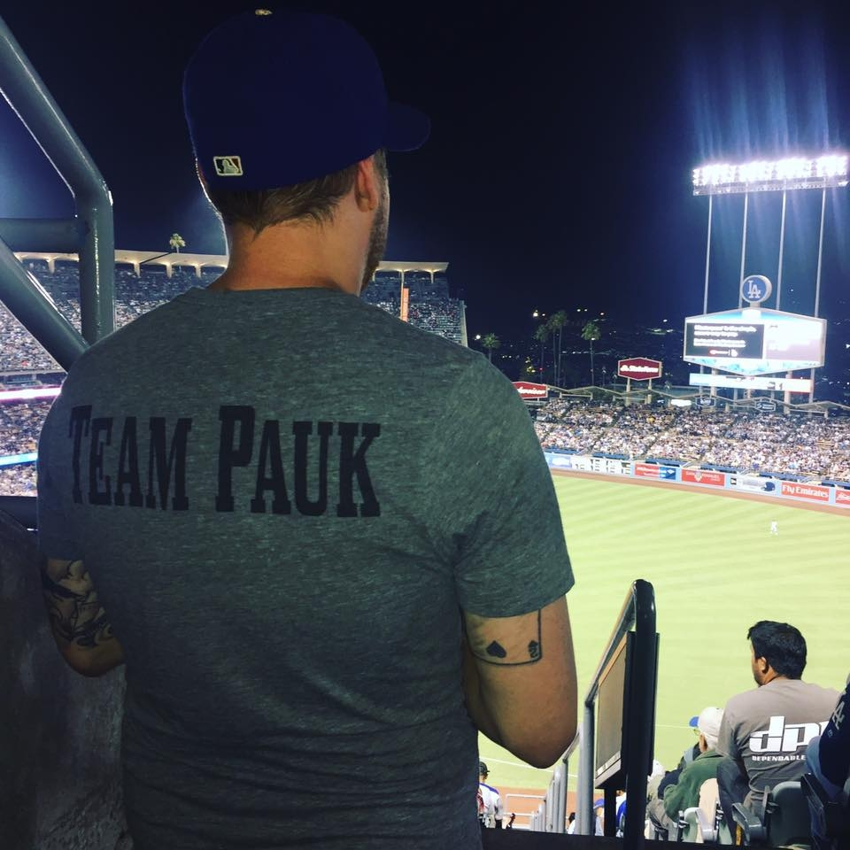

About Me

My name is John Firth, I am currently a Sr. Cloud Infrastructure Engineer,
I am attending a bootcamp to learn full stack web development. My skills include putting a lot
of things into this to demonstrate that I can make a float work. Watching a lot of netflix, and HBOGO,
and building websites that look a little better than a 5 year old.
I also like to watch internet videos of cats, and making this much filler about yourself is actually hard.
I have been to a few conferences and build servers for most of my job. When I complete this course I hope
to be better at coding and be able to actually make a fully functioning website.
That does more than just flexbox and filler. I have to keep typing and putting items
into this so that it will wrap around the picture. I am assuming that no one is reading this
at this point, because it has just been me talking about cats. Oh, and I love baseball,
I love going to baseball and hockey games.